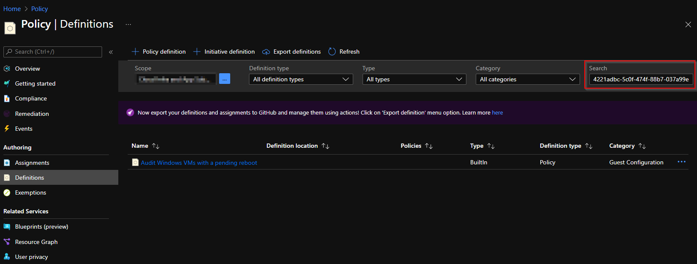
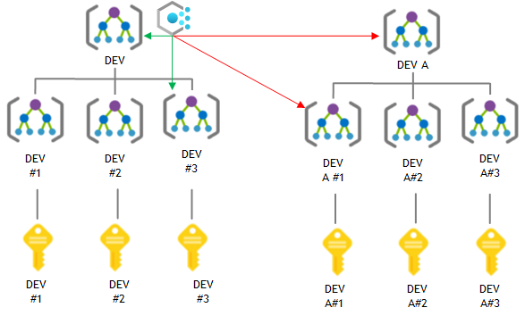

6 minutes
Using Azure Policy to audit and remediate your resources
Azure Policy as a configuration engine?
Azure Policy Guest Configuration
In a previous blog, I showed how to audit your GPO-contained settings inside Azure VM’s using Azure Policy Guest Configuration. The packaging process is a bit too much for some, and in some cases, you only need to perform a few configuration settings. Luckily there are some settings you can already configure with built-in policies. In this blog, I will show you what Azure Policies are and how they are assigned. When you’ve read this post, you’ll be able to assign Azure Policies to configure the state in your Azure environment and your Virtual Machines.
Assigning policies and policy initiatives
Azure Policy
As a recap, Azure Policy is a service Microsoft offers to audit, configure, and enforce the configuration of Azure resources to govern the state of your Azure environment. You could say that they are the embodiment of the ‘desired state’ of your Azure resources. Azure Policies are defined within the policy definitions. A policy definition (JSON) defines which resource types and properties to check for and what effects are supported by that policy.
Policy effects are operations, which are triggered if the Policy rules have been violated. Policies can be identified by their unique ‘policy definition id’. More information about Azure Policies can be found on Microsoft Docs.
Policy definitions are assigned to resources scopes (resourcegroup(s),
subscriptions or management groups). This assignment has a distinct name and a
policy effect is chosen. For example, when assigning an Azure
Policy which evaluates if Azure Key Vaults have soft-delete in place, you can
choose the action in that assignment to be Deny. This will deny new
resource deployments in the scope the policy is assigned to.
Some policy definitions allow for several effects, such as “Audit” or “Deny”. During the assignment of the policy, you can supply what policy effect you want executed in case the policy is violated. More information about Azure Policy effects can be found at Microsoft Docs.
Azure Policy Definition ID
As mentioned earlier, policy definitions are referenced by their id. You can search for policy- and initiative definitions, using their ID or display name on the Azure Portal.
Azure built-in policies can be referenced at each level with the same id (subscription and Management Group), so the definition id will always be the same.
Be wary if you’re creating custom policies and initiatives. These are stored at the object and level you create them. So if you’ve created a custom policy definition at a Management Group scope, you can apply that to that MG or resources scopes beneath the MG, but not in other scopes (not contained beneath that MG).

Another gotcha from the custom policies is that their policy definition id’s differ from built-in policy definitions. The policy definition id of a custom policy has a reference to the resource scope where the policy definition is stored.
Built in policy definition id’s look like this:
/providers/Microsoft.Authorization/policyDefinitions/6141c932-9384-44c6-a395-59e4c057d7c9
vs. custom policy definitions id’s
Custom policy definition (id) stored in a Management group:
/providers/Microsoft.Management/managementGroups/MGNAME/providers/Microsoft.Authorization/policyDefinitions/0d030380-eff5-415c-8ea0-b4bb4af4bd20
Custom policy definition (id) stored in a subscription:
/subscriptions/91aab338-3ebc-420a-b94e-8874faa95ae4/providers/Microsoft.Authorization/policyDefinitions/15f09619-2135-47c9-8af6-1f6a271b8f0d
Azure Policy Initiatives have a similar definition id, but just a small difference (policySetDefinitions instead of policyDefinitions):
Built-in:
/providers/Microsoft.Authorization/policySetDefinitions/75714362-cae7-409e-9b99-a8e5075b7fad
vs. custom
/providers/Microsoft.Management/managementGroups/MGNAME/providers/Microsoft.Authorization/policySetDefinitions/84317eb8115a47af90ab703c
Assigning Azure Policies
While Azure Policy Definitions are a tool to reach a state, the policy requires a target resource scope to be applied. The Azure Policy assignment is a configuration item which contains the following:
- What resource scope should the policy apply to
- What exclusions should there be within the assigned scope
- What policy is assigned
- What is the name of the assignment
- Should the policy be Enforced
- Who assigned the policy
- Parameter data for policies with parameters
- Which Azure Region the Managed Identity should be deployed in (if using DINE/modify policy effects)
- What default text string to display when a resource is not compliant or if a resource deployment is not compliant.
There are multiple methods to assign policies to Azure resource scopes. In my previous blog I showed how to assign policies using the Azure Portal. I like using PowerShell, so I’ll use that. More methods to assign Azure Policies can be found on the Microsoft Docs at the Quickstarts tab.
To make it extra interesting, let’s configure objects we can’t edit in the Azure portal.In example, settings in a virtual machine OS.
Prerequisites
We do need to setup a few things before we can configure Azure Policy to make changes to our VM’s.
In your subscription(s):
- Must have registered the Guest Configuration Resource provider
- You can do so with PowerShell using:
Register-AzResourceProvider -ProviderNamespace Microsoft.GuestConfiguration
- You can do so with PowerShell using:
On your VM resources:
- You must have the Azure Policy Guest Extension present on your VM’s
- Can be deployed with an initiative definition:
/providers/Microsoft.Authorization/policySetDefinitions/12794019-7a00-42cf-95c2-882eed337cc8
- Can be deployed with an initiative definition:
- Have a System assigned Managed Identity for your VM
- The same initiative can be used mentioned above
- VM must be a supported client
- Allow outbound traffic on TCP 443 to NSG-tags
AzureArcInfrastructureandStorageor use Private Link
Having met all these requirements, we’re all set to deploy built-in GC policies. Documentation for the built-in GC policies is available at Microsoft Docs. There’s also a built-in policy initiative.
Assigning policies
To show the concept, I’m using the
Audit Windows machines that are not set to the specified time zone. built-in
Azure Guest Configuration Policy. It’s policy definition ID is:
/providers/Microsoft.Authorization/policyDefinitions/4221adbc-5c0f-474f-88b7-037a99e6114c.
In the policy definition the policy parameter timeZone is
referenced, but it has no defaultValue. So we’re required to supply the
parameter when assigning this policy.
Audit
We could start with an Azure Policy that audits the setting on the machine. Assigning the policy could be done with:
$DefinitionId = "/providers/Microsoft.Authorization/policyDefinitions/c633f6a2-7f8b-4d9e-9456-02f0f04f5505"
$splat = @{
Name = 'Audit Windows machines - Timezone - Test'
Scope = "/subscriptions/91aab338-3ebc-420a-b94e-8874faa95ae4"
PolicyParameterObject = @{timeZone="(UTC+01:00) Amsterdam, Berlin, Bern, Rome, Stockholm, Vienna"}
PolicyDefinition = Get-AzPolicyDefinition -Builtin | Where-Object PolicyDefinitionId -eq $DefinitionId
}
New-AzPolicyAssignment @splat
The code-block above assigns the policy. The policy we assigned has
AuditIfNotExists as a policy effect. However, we’re interested in configuring
Windows Configuration via Azure Policies, instead of auditing.
Some policies can deploy resources or modify existing resources to automate the
steps towards desired state. Deploying and modifying does require a managed
identity for the Assignment, to perform the policy effects. When assigning a
policy with those effects (DeployIfNotExists (DINE) or modify), the managed
identity is assigned the RBAC-role, as defined in the policy definition under the roleDefinitionIds.
DeployIfNotExists
Using Azure Policy, we can now also set the timezone used on the machine. We
can do so with a policy definition conveniently named: Configure time zone on Windows machines.
This has a roleDefinition property in the policy definition:
/providers/microsoft.authorization/roleDefinitions/b24988ac-6180-42a0-ab88-20f7382dd24c
In the built-in roles reference we can see that b24988ac-6180-42a0-ab88-20f7382dd24c, maps to Contributor.
$DefinitionId = "/providers/Microsoft.Authorization/policyDefinitions/6141c932-9384-44c6-a395-59e4c057d7c9"
$splat = @{
Name = New-Guid
DisplayName = 'Configure time zone on Windows machines - test'
Scope = "/subscriptions/91aab338-3ebc-420a-b94e-8874faa95ae4"
PolicyParameterObject = @{timeZone="(UTC+01:00) Amsterdam, Berlin, Bern, Rome, Stockholm, Vienna"}
PolicyDefinition = Get-AzPolicyDefinition -Builtin | Where-Object PolicyDefinitionId -eq $DefinitionId
Location = 'westeurope'
}
New-AzPolicyAssignment @splat -AssignIdentity
After waiting a while